Comparação de estratégias de ordenação da fila de expedição, com docas especializadas e gerais · Coding Tank, Ordenação e Prioridade · 34380 execuções simuladas (12840 com janelas amplas e 21540 com janelas apertadas)
Conclusão. O melhor algoritmo no geral é o EDF (menor prazo de expedição primeiro): nota média 68,8 de 100 e vitória clara em 20 das 23 comparações, mais 2 empates técnicos, contra 59,8 do segundo colocado (Prazo virtual α=0,5). Ele é o melhor tanto com docas especializadas quanto com docas gerais, e também na Black Friday. O prazo virtual protege os pedidos VIP, mas paga com mais atrasos e uma cauda muito pior. Se o VIP passasse a pesar 40% na nota, o resultado mudaria: o EDF cairia para a 7ª posição e passariam à frente Duas filas, WSPT e Faixas + aging, estratégias que protegem VIPs à custa da cauda, e o prazo virtual passaria a vencer 9 das 23 comparações.
1. Resumo executivo
Recorte
Melhor algoritmo
Evidência
Geral (todas as docas e cenários)
EDF
nota 68,8; 20 vitórias claras e 2 empates em 23 comparações
Docas especializadas (com e sem empréstimo)
EDF
nota 65,1; 8 vitórias e 2 empates em 10
Docas gerais (uniforme, capacidade variada, velocidade variada)
EDF
nota 72,1; 12 vitórias e 0 empates em 13
Black Friday
EDF (com docas de capacidade variada ou especializadas)
36,1% atrasados e P99 de 154 min com docas de capacidade variada; 34,8% e 258 min com as especializadas
Se o VIP voltar a ser prioridade
depende: Duas filas lidera a nota média (62,8), mas com cauda grande; o prazo virtual com α alto vence 9 de 23 comparações
com peso de 40% para o VIP na nota o EDF cai para 48,3 (7ª posição) e vence 6 de 23
Configurações de docas (com EDF): as gerais idealizadas (geral de velocidade variada e a uniforme) têm as melhores notas, mas supõem que qualquer doca embala qualquer pedido. Entre as que respeitam a restrição física de tamanho, a melhor é geral de capacidade variada, bem à frente das especializadas. Juntar a capacidade absorve melhor picos e rajadas; a separação rígida por tamanho cria gargalos.
Estratégias "ótimas" em sobrecarga são enganosas: Duas filas e WSPT mostram menos atrasados porque abandonam pedidos (P99 de centenas de minutos), por isso foram desqualificadas como "melhor".
O heap é o algoritmo de ordenação mais barato e dá exatamente a mesma ordem que os outros quatro.
2. Como comparamos
Dados: pedidos sintéticos de uma operação de grande porte na América Latina: chegadas com picos ao longo do dia, janelas de prazo curtas, regiões distintas (BR, MX, AR, CO, CL), 8 cenários (normal 85%, pico 105%, sobrecarga 125%, Black Friday, rajada de pedidos grandes, mix deslocado, falha de doca, multi-país) e 30 sementes por cenário.
Docas (15 por configuração): especializada por tamanho (4 Express, 6 Padrão, 5 Pesada), com e sem empréstimo; geral uniforme (15 docas idênticas, fila única); geral de capacidade variada (docas pequenas só para P, médias para P e M, grandes para tudo); geral de velocidade variada (0,75×, 1,0× e 1,25×).
Estratégias: FIFO, EDF, peso composto, duas filas, faixas + aging, WSPT e prazo virtual (α de 0,5 a 5; α = 0 equivale ao EDF).
Nota (0 a 100): em cada cenário e configuração de docas, as estratégias são ordenadas por quatro métricas e combinadas com pesos do grupo: % de atrasados 35%, atraso médio 25%, P99 (cauda) 30% e % de VIPs atrasados 10%. A nota média é feita sobre os cenários em que houve atraso.
Desqualificação por abandono: uma estratégia não pode ser "a melhor" se seu P99 passa de 3 vezes o do EDF e de 120 min.
Empate técnico: se a melhor estratégia fica a menos de 0,3 ponto percentual de atrasados, 2 min de P99 e 0,5 min de atraso médio do EDF, o resultado é empate e vai para o EDF pela simplicidade.
Limites: dados sintéticos, embalagem determinística (P = 1, M = 2, G = 4 min) e parâmetros dos concorrentes sem a mesma calibração do α.
3. Resultado geral
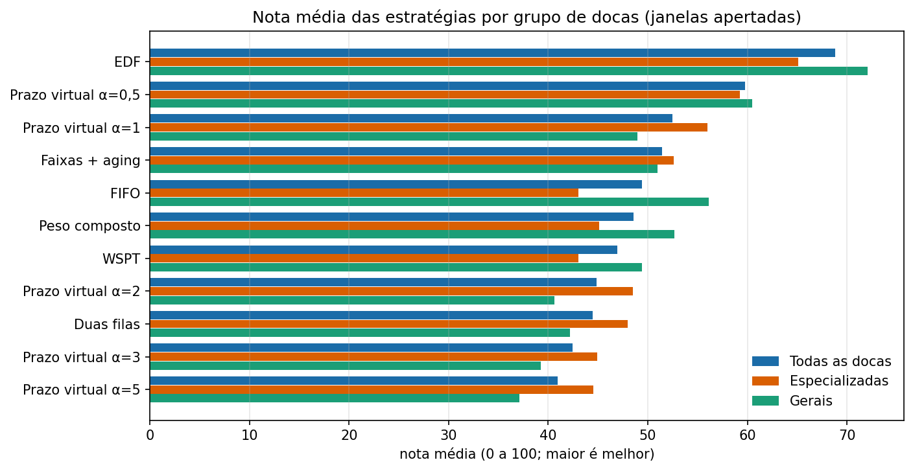
Nota média por estratégia: todas as docas, só especializadas e só gerais.
Ranking com todas as docas
Estratégia
Nota média
Vitórias claras
Empates com EDF
EDF
68,8
20
2
Prazo virtual α=0,5
59,8
0
0
Prazo virtual α=1
52,4
0
0
Faixas + aging
51,4
0
0
FIFO
49,4
1
0
Peso composto
48,5
0
0
WSPT
46,9
0
0
Prazo virtual α=2
44,8
0
0
Leitura. O EDF lidera nos três recortes. O prazo virtual com α = 0,5 é o segundo colocado, porque se comporta quase como o EDF com um pequeno bônus de score; quanto maior o α, pior a nota, pois aumenta a cauda. FIFO só ganha em um caso isolado, por diferença mínima.
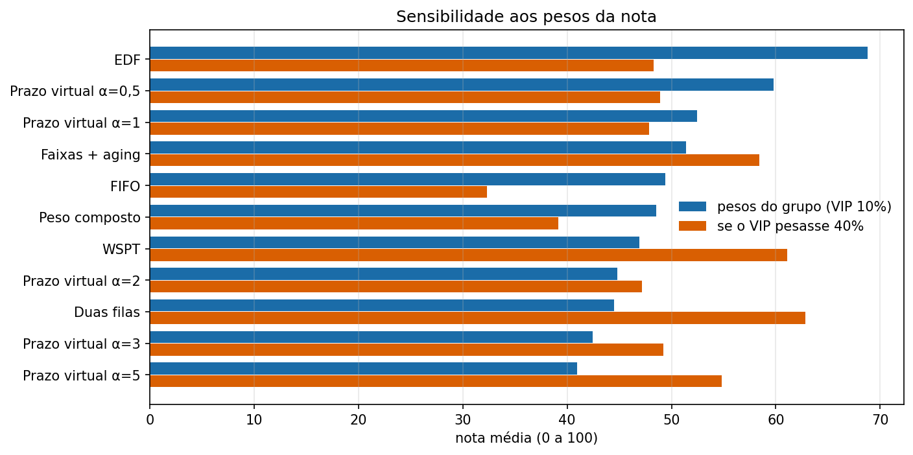
Se o VIP pesasse 40% na nota, a ordem muda: Duas filas, WSPT e Faixas + aging passam à frente e o EDF cai para a nota 48,3 (7ª posição). O VIP é o único critério em que o EDF perde; por isso a decisão do grupo de tratá-lo como secundário é o que sustenta a conclusão.
4. Docas especializadas
Docas separadas por tamanho de pedido: Express (P), Padrão (M) e Pesada (G).
Cenário
Especializada (com empréstimo)
Especializada (sem empréstimo)
Normal (85%)
sem atrasos (empate)
sem atrasos (empate)
Pico (105%)
EDF 14,1% atras., P99 18 min
EDF 17,7% atras., P99 23 min
Sobrecarga (125%)
EDF 74,4% atras., P99 165 min
EDF 74,8% atras., P99 176 min
Black Friday
EDF 34,8% atras., P99 258 min
EDF 37,2% atras., P99 257 min
Rajada de G
EDF 11,7% atras., P99 129 min
EDF 11,7% atras., P99 128 min
Mix deslocado
EDF (empate técnico)
EDF (empate técnico)
Falha de doca
sem atrasos (empate)
sem atrasos (empate)
Multi-país
sem atrasos (empate)
sem atrasos (empate)
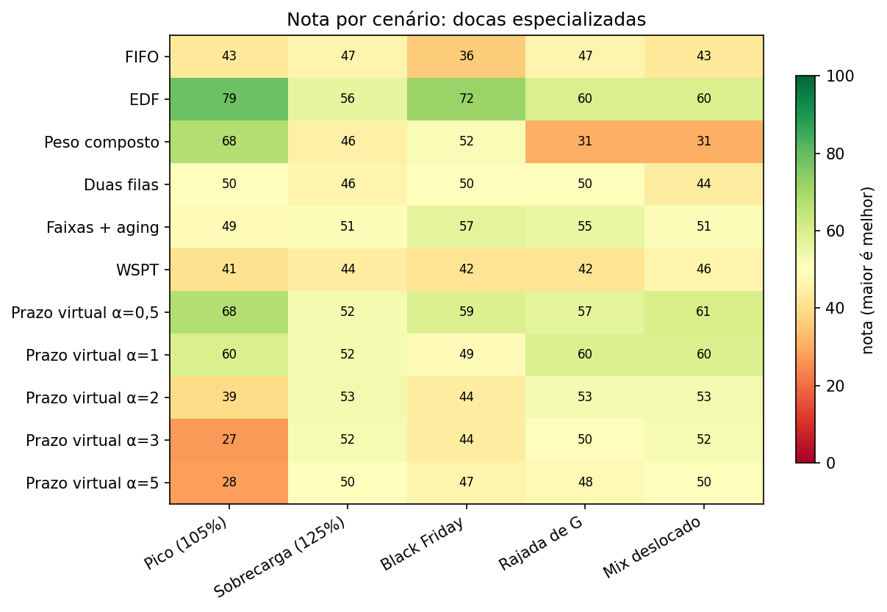
Nota por estratégia e cenário. Verde é melhor. Cenários em que o EDF quase não atrasa (sem o que melhorar) ficam fora da média.
Ranking
Estratégia
Nota média
Vitórias claras
Empates com EDF
EDF
65,1
8
2
Prazo virtual α=0,5
59,2
0
0
Prazo virtual α=1
56,0
0
0
Faixas + aging
52,6
0
0
Prazo virtual α=2
48,5
0
0
Duas filas
48,0
0
0
Peso composto
45,1
0
0
Prazo virtual α=3
45,0
0
0
Comentários
EDF é o melhor em todos os cenários com atraso, e o prazo virtual com α pequeno é o mais próximo.
O pico é o ponto fraco desse desenho: no pico de 105% o EDF atrasa 14,1% dos pedidos (FIFO: 20,1%), porque as 4 docas Express chegam perto de 95% de uso e viram gargalo. Com docas gerais o mesmo EDF atrasa só 1,6%.
No mix deslocado (mais pedidos grandes), as docas Pesadas saturam e as demais ficam ociosas: 29,7% de atrasados e P99 de 656 min. É o maior risco de dimensionar errado.
Em sobrecarga de 125%, o EDF atrasa 74,4% (FIFO: 73,0%): sem capacidade nenhuma regra resolve, mas o EDF tem a menor cauda (P99 de 165 min). Duas filas mostram 23,1% de atrasados, só que com P99 de 794 min.
O empréstimo de docas ajuda pouco: no pico, 14% de atrasados com empréstimo contra 18% sem.
5. Docas gerais
Qualquer doca atende qualquer pedido: uniforme (15 iguais), de capacidade variada (pequenas, médias e grandes) e de velocidade variada.
Cenário
Geral uniforme
Geral de capacidade variada
Geral de velocidade variada
Normal (85%)
sem atrasos (empate)
sem atrasos (empate)
sem atrasos (empate)
Pico (105%)
EDF 1,6% atras., P99 1 min
EDF 2,7% atras., P99 2 min
EDF 1,7% atras., P99 1 min
Sobrecarga (125%)
EDF 73,9% atras., P99 134 min
EDF 73,6% atras., P99 137 min
EDF 73,9% atras., P99 134 min
Black Friday
EDF 59,9% atras., P99 100 min
EDF 36,1% atras., P99 154 min
EDF 59,9% atras., P99 100 min
Rajada de G
sem atrasos (empate)
FIFO 12,4% atras., P99 78 min
sem atrasos (empate)
Mix deslocado
EDF 30,5% atras., P99 21 min
EDF 27,9% atras., P99 393 min
EDF 30,5% atras., P99 21 min
Falha de doca
sem atrasos (empate)
sem atrasos (empate)
sem atrasos (empate)
Multi-país
sem atrasos (empate)
sem atrasos (empate)
sem atrasos (empate)
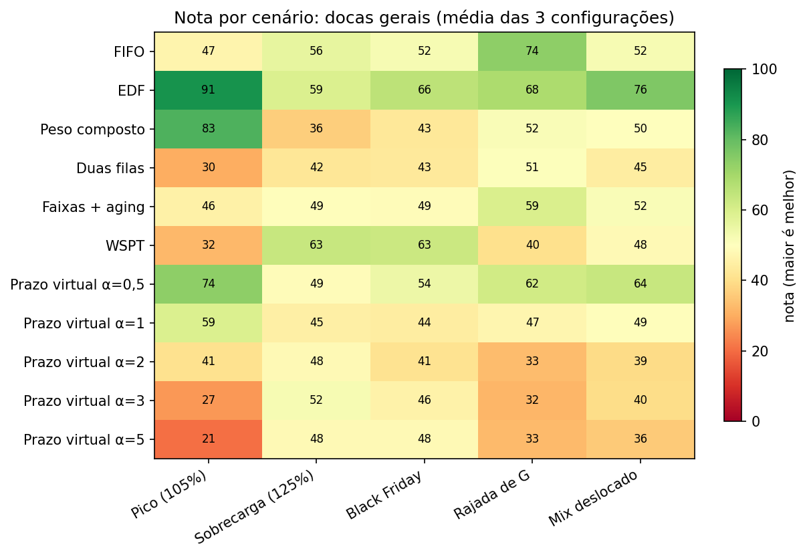
Nota por estratégia e cenário, média das três configurações gerais.
Ranking
Estratégia
Nota média
Vitórias claras
Empates com EDF
EDF
72,1
12
0
Prazo virtual α=0,5
60,5
0
0
FIFO
56,1
1
0
Peso composto
52,7
0
0
Faixas + aging
51,0
0
0
WSPT
49,4
0
0
Prazo virtual α=1
49,0
0
0
Duas filas
42,2
0
0
Comentários
EDF é o melhor em quase todos os cenários. Há exceções pontuais: na rajada de pedidos grandes com docas de capacidade variada o FIFO empata por uma diferença de décimos.
Agrupar a capacidade derruba os atrasos: no pico, 1,6% (uniforme) e 2,7% (capacidade variada); na rajada de pedidos grandes, 0,0% e 12,6%, contra 11,7% das especializadas.
A de velocidade variada se comporta como a uniforme, pois a soma das velocidades é a mesma e a fila é única.
Cuidado: a uniforme e a de velocidade supõem que qualquer doca embala qualquer pedido, o que é otimista. A de capacidade variada respeita a restrição física (pedido G só em doca grande) e é a mais realista das gerais.
6. Black Friday
Dia com carga de até 140% da capacidade, mais pedidos grandes (22% do mix) e muitas atualizações de prazo.
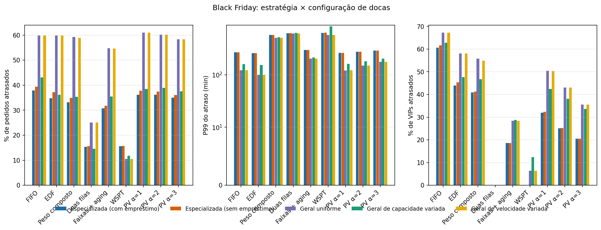
Estratégia × configuração de docas na Black Friday.
Melhores combinações (docas + estratégia)
Docas
Estratégia
% atrasados
Atraso médio (min)
P99 (min)
% VIP atrasados
% atrasados P / M / G
Especializada (com empréstimo)
EDF
34,8
26,0
258
43,9
14,0 / 42,8 / 72,2
Especializada (com empréstimo)
Prazo virtual α=0,5
35,4
26,3
259
36,9
15,2 / 42,9 / 72,1
Especializada (com empréstimo)
Faixas + aging
30,7
30,6
299
18,7
16,0 / 31,3 / 67,1
Geral de capacidade variada
EDF
36,1
32,2
154
47,7
2,9 / 63,0 / 69,8
Especializada (sem empréstimo)
Faixas + aging
31,8
31,1
298
18,7
17,9 / 31,7 / 67,0
Geral de capacidade variada
Prazo virtual α=0,5
37,2
32,6
155
44,6
4,9 / 63,4 / 69,7
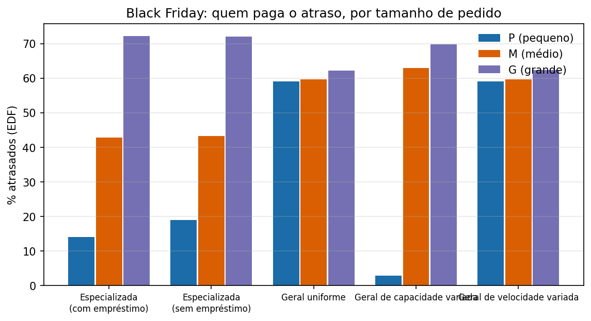
Atrasos do EDF por tamanho de pedido.
Melhor algoritmo: EDF, em todas as cinco configurações de docas.
Com docas especializadas, o EDF atrasa 34,8% dos pedidos, contra 59,9% com docas gerais uniformes. A separação isola o excesso de pedidos grandes: os P ficam com 14,0% de atrasados, contra 59,1% na geral (hipótese apoiada nos atrasos por tamanho, não testada isoladamente).
O preço é a cauda: P99 de 258 min nas especializadas (os pedidos G sofrem, 72,2% atrasados) contra 100 min nas gerais.
Melhor equilíbrio: docas de capacidade variada com EDF (36,1% atrasados e P99 de 154 min): quase o mesmo % de atrasados da especializada, com cauda bem menor.
Ressalva: Faixas + aging atrasa menos pedidos na Black Friday com docas especializadas (30,7% contra 34,8% do EDF), mas com cauda maior (P99 de 299 min contra 258); pelo critério de nota e cauda, o EDF fica à frente.
VIP na Black Friday: o EDF deixa 43,9% dos VIPs atrasados; o prazo virtual com α = 3 reduz para 20,5%, e é a única configuração em que ele atende ao critério do grupo, mas só nesse cenário.
7. Docas especializadas × gerais
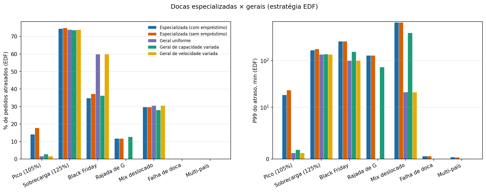
EDF em cada cenário, por configuração de docas.
Ranking das configurações de docas (EDF, média dos cenários com atraso)
Configuração de docas
Nota média (EDF)
Nota média (prazo virtual α=2)
Geral de velocidade variada
73,0
71,1
Geral uniforme
67,0
62,5
Geral de capacidade variada
54,2
58,6
Especializada (com empréstimo)
30,0
32,5
Especializada (sem empréstimo)
25,8
25,4
A nota compara as cinco configurações entre si, em cada cenário com atraso. As duas primeiras são idealizadas (qualquer doca atende qualquer pedido); a de capacidade variada é a melhor entre as que respeitam a restrição de tamanho.
No pico e nas rajadas, as gerais ganham: o pico cai de 14,1% para 1,6% de atrasados e a rajada de pedidos grandes de 11,7% para 0,0%.
No mix deslocado, a cauda da especializada é muito pior: P99 de 656 min contra 21 min (geral uniforme) e 393 min (capacidade variada).
Na Black Friday a especializada reduz o % de atrasados, à custa da cauda.
Recomendação: usar docas gerais de capacidade variada (a configuração que respeita a restrição física), deixando as docas maiores atenderem pedidos menores.
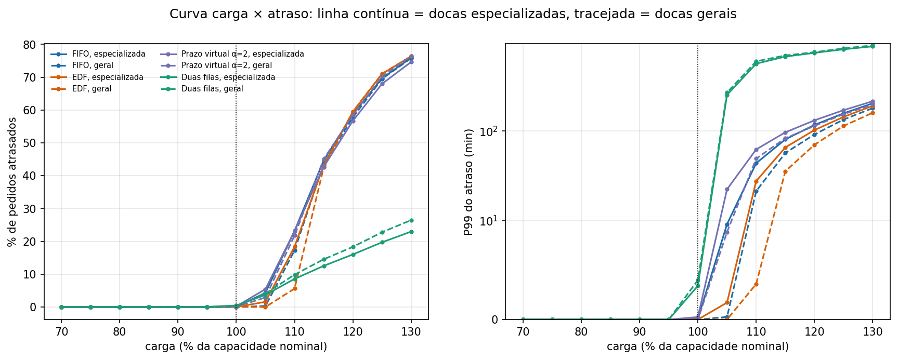
Atrasos em função da carga: a diferença entre docas especializadas e gerais aparece a partir de ~100% de carga.
8. EDF × prazo virtual: o custo de proteger VIPs
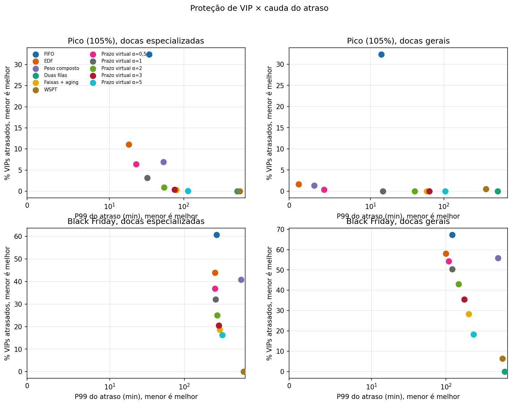
Cada ponto é uma estratégia; o canto inferior esquerdo é o ideal (poucos VIPs atrasados e cauda curta).
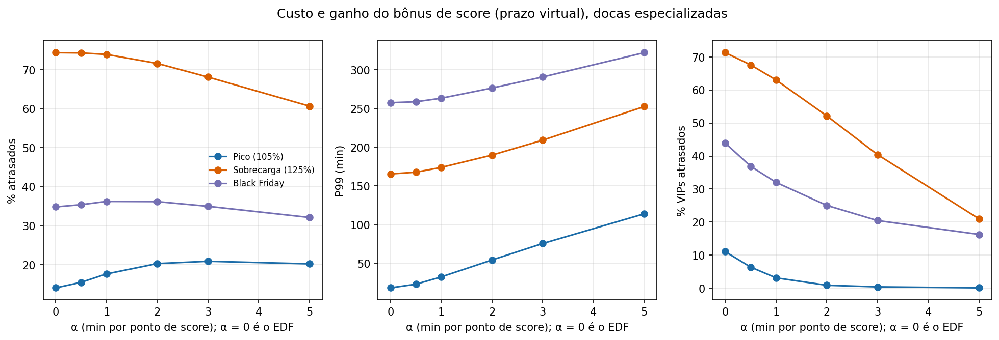
Efeito do α: quanto maior, menos VIPs atrasados, mas mais atrasos totais e cauda maior.
No pico (docas especializadas), o prazo virtual com α = 3 reduz os VIPs atrasados de 11,0% para 0,4%, mas o total de atrasados sobe de 14,1% para 20,9% e o P99 de 18 para 76 min.
O bônus de score tira pedidos de score baixo da frente, e esse é o custo de proteger VIPs. Se o VIP pesasse 40% na nota (seção 3), o prazo virtual com α alto passaria a vencer 9 das 23 comparações, sobretudo em sobrecarga e Black Friday, pagando com cauda maior.
Na calibração com sementes separadas, nenhum α da grade atendeu ao critério (reduzir VIP em 50% sem piorar atrasados em mais de 1 ponto percentual nem o P99 em mais de 20%).
9. Algoritmos de ordenação (custo)
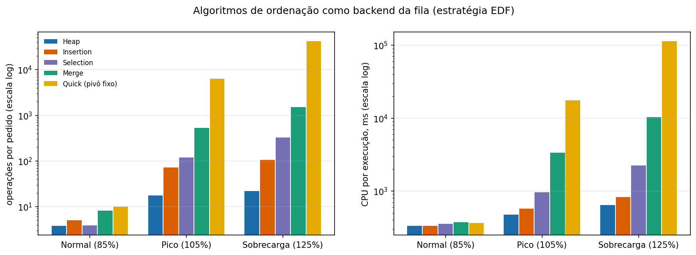
Mesma chave (EDF), mesma ordem de despacho; muda só o custo de manter a fila.
Em sobrecarga, o heap faz 22 operações por pedido e usa 0,64 s de CPU por execução; Insertion 0,8 s, Selection 2,2 s, Merge 10,3 s e Quick Sort com pivô fixo 113 s (41785 operações por pedido).
Os cinco algoritmos produzem exatamente os mesmos atrasos (0 divergências), então a escolha é só de custo: o heap.
Repetimos a análise com os dados do primeiro experimento (janelas de 30 a 240 min, docas especializadas e uma geral): 10 comparações com atraso, das quais o EDF vence 8; 0 empates técnicos e 12 cenários sem atrasos. A nota média do EDF nessa rodada é 66,9. A conclusão se mantém, mas com janelas amplas 12 dos 22 casos não têm nenhum atraso e vários outros quase não discriminam as estratégias; por isso o segundo experimento usou janelas mais apertadas.
11. Limitações e próximos passos
Dados sintéticos: o score é gerado a partir de SLA, distância, valor e reputação, o que favorece estratégias que usam o score (isso favorece o prazo virtual, e mesmo assim o EDF ganha).
Os pesos da nota e as tolerâncias de empate são decisões do grupo; a sensibilidade ao peso do VIP está na seção 3.
A falha de doca é ignorada na configuração de velocidade variada (não há grupo Pesada).
Os parâmetros de faixas, aging e limite de duas filas não foram calibrados com o mesmo rigor do α.
Próximos passos: testar outras regras de despacho para as docas de capacidade variada (reservar docas grandes para G), variar a quantidade de docas por grupo, e validar em um teste A/B em região piloto.